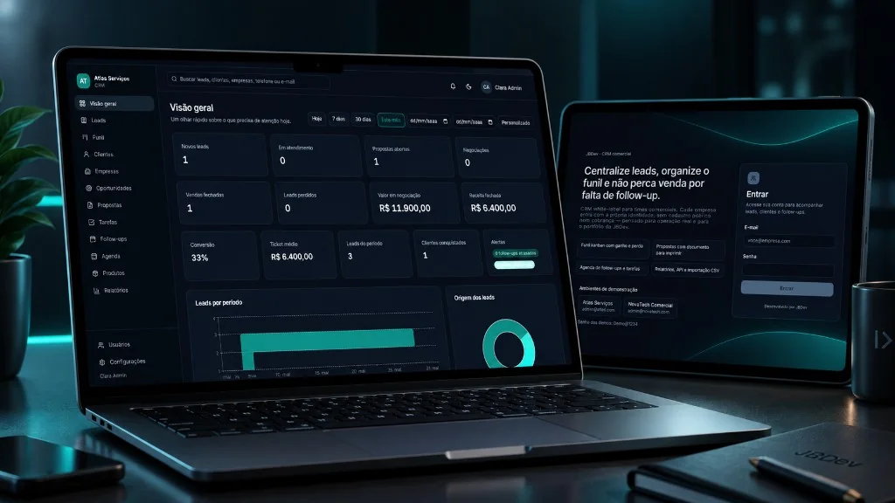
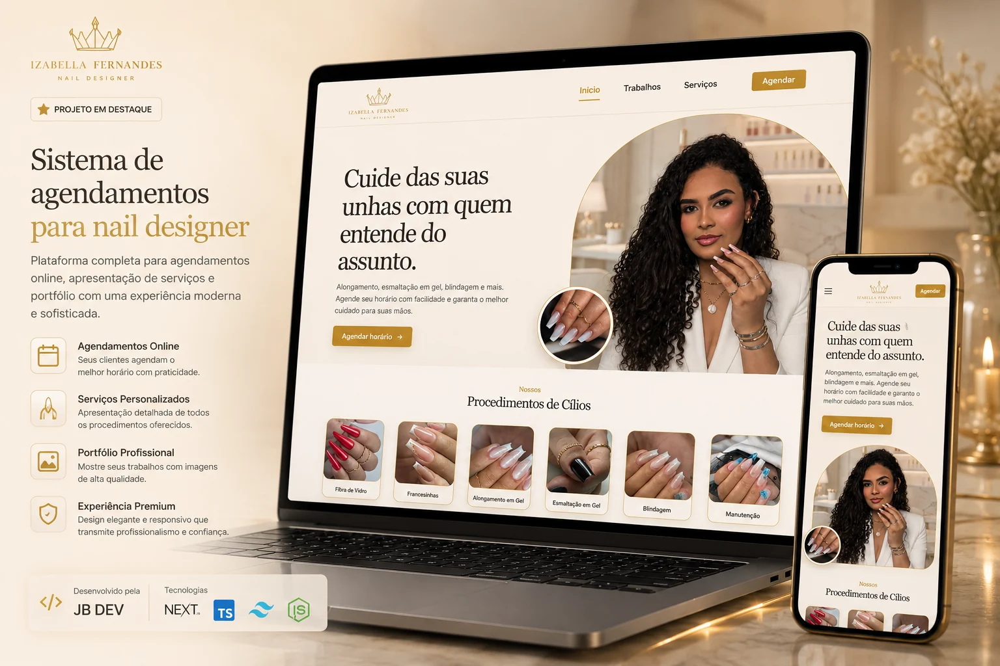
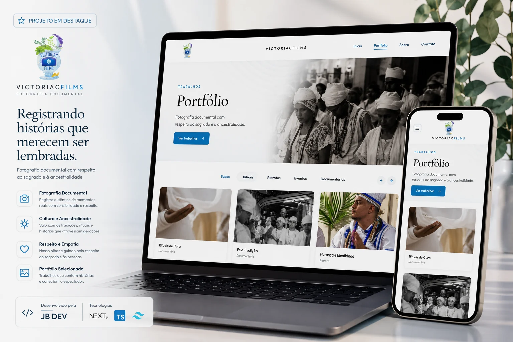
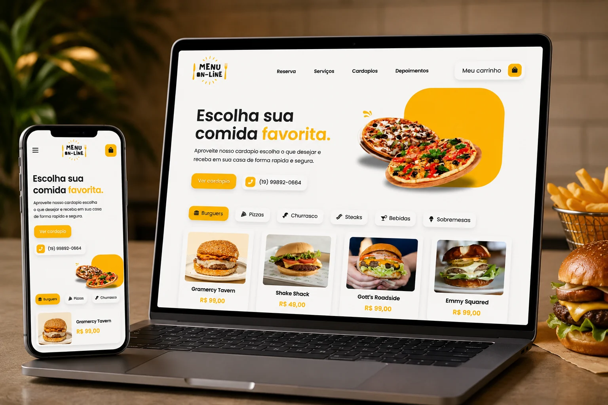
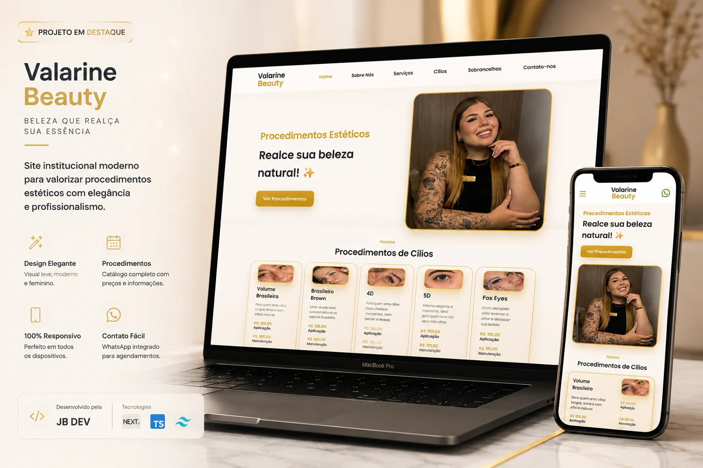
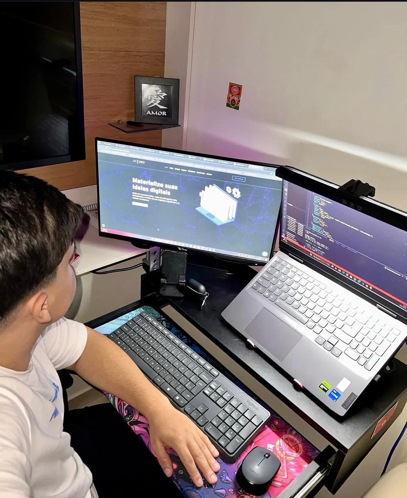

Sites institucionais
Apresente sua empresa com clareza, credibilidade e uma jornada pensada para gerar contatos.
Quero uma orientaçãoDESENVOLVIMENTO WEB • ESTRATÉGIA • RESULTADOS
Criamos sites profissionais, landing pages, sistemas web e e-commerce para empresas que querem gerar mais resultados.
Serviços
Da presença digital à automação de processos, construímos soluções claras, confiáveis e prontas para evoluir.
Apresente sua empresa com clareza, credibilidade e uma jornada pensada para gerar contatos.
Quero uma orientaçãoPáginas focadas em campanhas, lançamentos e ofertas com uma mensagem direta e comercial.
Quero uma orientaçãoFerramentas sob medida para organizar rotinas, atendimentos, dados e processos internos.
Quero uma orientaçãoExperiências de compra simples, confiáveis e preparadas para apresentar seus produtos.
Quero uma orientaçãoMelhorias de desempenho, usabilidade e estrutura para sites que precisam entregar mais.
Quero uma orientaçãoAcompanhamento técnico para manter sua solução atualizada e alinhada ao crescimento do negócio.
Quero uma orientaçãoNão sabe qual solução seu negócio precisa?Conte o que você quer melhorar e nós ajudamos a encontrar o melhor caminho.
Quero uma orientaçãoComo trabalhamos
Você acompanha as decisões e entende o caminho do projeto do início à entrega.
Entendemos seu negócio, público, desafio e prioridade.
Definimos escopo, conteúdo e a solução mais adequada.
Design e desenvolvimento avançam com validações objetivas.
Testamos, publicamos e orientamos você sobre os próximos passos.
Vamos começar seu projeto?A gente entende sua necessidade antes de falar em solução.
Começar um projetoConfiança construída no processo
Você conversa diretamente com quem desenvolve sua solução.
Decisões alinhadas ao seu negócio, sem pacotes genéricos.
Atendimento em Indaiatuba/SP e para clientes de outras regiões.
Projetos selecionados
Uma seleção de sites e sistemas que demonstra a variedade de projetos desenvolvidos pela JB DEV.

Aplicação web
Gestão financeira pessoal com visão de receitas, despesas, orçamentos e indicadores em um único ambiente.
Ver projeto ao vivo
CRM comercial
Gestão de leads e funil kanban com propostas, follow-ups, agenda e indicadores de conversão em um só painel.
Ver projeto ao vivo
Sistema de agendamento
Agendamento de serviços, profissionais e horários com área administrativa para a barbearia.
Ver projeto ao vivo
Sistema de agendamento
Portfólio de serviços integrado à escolha de datas e horários, com gestão de agendamentos.
Ver projeto ao vivo
Site e portfólio
Experiência visual para apresentar fotografia, identidade, portfólio e contato de forma envolvente.
Ver projeto ao vivo
Cardápio digital
Navegação por categorias, busca e apresentação organizada dos produtos para facilitar pedidos.
Ver projeto ao vivo
Landing page
Apresentação de serviços, trabalhos e contato para fortalecer a presença digital do estúdio.
Ver projeto ao vivoGostou do que viu? O próximo projeto pode ser o seu.
Quero criar algo assimPor que a JB DEV
Cada recurso precisa apoiar um objetivo do negócio ou melhorar a experiência do cliente.
Você sabe o que está sendo feito, por que foi escolhido e qual é o próximo passo.
A solução é pensada para funcionar com clareza em computadores, tablets e celulares.
Projetos organizados para receber melhorias conforme seu negócio ganha novas necessidades.

Sobre a JB DEV
A JB DEV desenvolve sites, sistemas e soluções digitais para empresas e profissionais que querem fortalecer sua presença, organizar processos ou tirar uma ideia do papel.
À frente da empresa, Jonathan Balieiro acompanha cada projeto diretamente e combina desenvolvimento, visão de produto e cuidado visual em todas as entregas.
Mesmo que você ainda não saiba exatamente o que precisa.
Depoimentos
Relatos preservados do portfólio anterior da JB DEV.
“Simplesmente transformador! A atenção aos detalhes e a agilidade no atendimento superaram todas as expectativas.”
“O Jonathan desenvolveu meu site com muito cuidado. O resultado superou minhas expectativas e meus clientes adoram a facilidade de navegação.”
“Trabalho impecável! Um site que representa minha marca e facilita o contato com meus clientes.”
Perguntas frequentes
Respostas diretas sobre o início de um projeto com a JB DEV.
Sites institucionais, landing pages, lojas virtuais, sistemas web e melhorias em projetos existentes.
Não. O atendimento pode ser presencial em Indaiatuba/SP e remoto para clientes de outras cidades e regiões.
Conte sua necessidade pelo WhatsApp ou formulário. Após entender objetivo e escopo, a JB DEV orienta os próximos passos.
Sim. É possível avaliar otimizações, correções, novas funcionalidades e evolução técnica conforme o estado atual do projeto.
Seu próximo projeto começa com uma conversa
Conte o que você precisa e vamos conversar sobre a melhor solução para o seu negócio.
Vamos conversar sobre seu projetoConversa inicial sem compromisso.
Ver projetos primeiro